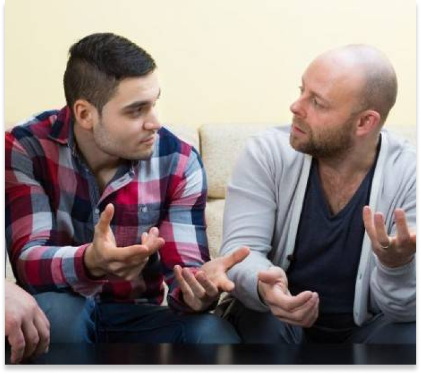
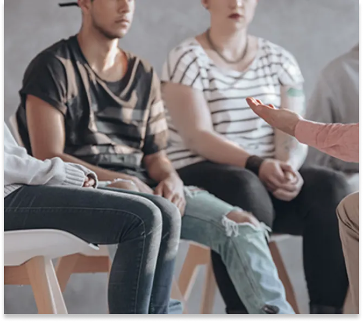
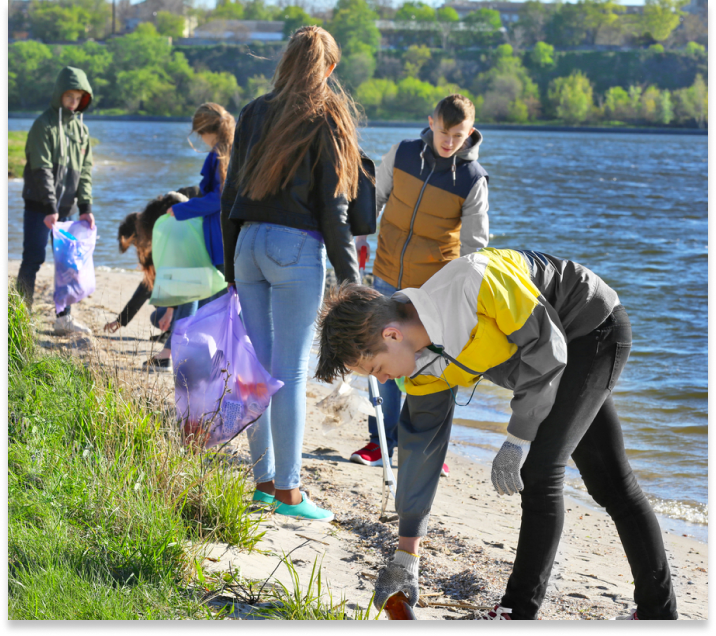

Programs & Services
Get Involved
About US
Contact US
Youth Recovery Community Center
In 2015 Rise Recovery opened its doors to the Youth Recovery Community Center (YRCC). Funded through the Texas Department of Health and Human Services under the Recovery Support Services pilot project, the YRCC allows for a wide array of non-clinical services and supports to help youth age 13-21 initiate, support and maintain recovery from substance use disorders. Additionally, the YRCC is mandated with community outreach related to substance use disorders and recovery.
The YRCC offers youth and young adults:

Peer Counseling
With trained staff who are also in long-term recovery.

Facilitated Support Group Meetings
Support groups afford participants an opportunity to share their experiences in an environment that encourages vulnerability and honesty.
Social Activities
That promote a healthy, sober engagement with life.
Education and Employment Support
This includes resume building, homework help, application support, guidance and resources, and referrals to other agencies.

Community Service Projects
For our youth and young adults to give back to the community. Past projects have included a community garden, volunteering at animal shelters, and working community events.